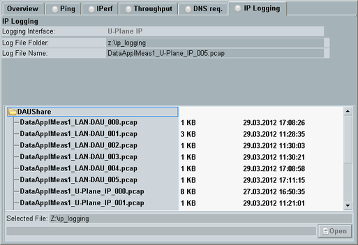
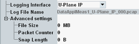

The "IP Logging" application allows you to create signaling log files for the IP layer communication at the DAU. You can monitor either the user plane communication between the DAU and the DUT or you can monitor the communication at the LAN DAU connector.
The log files are created in a format compatible with Wireshark, a network protocol analyzer which is available free of charge. You can download Wireshark from http://www.wireshark.org. If Wireshark is installed at the instrument, you can open created log files directly from the "IP Logging" tab to analyze them in Wireshark. For encrypted connections, see also "Configuring Wireshark for IPsec".
The system drive operations required for IP logging impact the performance of the DAU. Thus measurement results can be distorted by IP logging. Switch off IP logging especially for throughput measurements. |
The contents of the "IP Logging" tab, the related configuration dialog and the related softkeys and hotkeys are described below.

At the top, the "IP Logging" tab displays the configured logging interface and the folder and name of the currently used log file.
The lower part of the tab lists the log files stored on the system drive of the DAU. The files are stored in directory ip_logging of the samba share. Connected USB storage devices like USB sticks are also displayed.
"Selected File" at the bottom refers to the file currently selected in the list above. The button "Open" opens the selected file in Wireshark. If Wireshark is not installed, the button is grayed-out. We recommend connecting a mouse to use Wireshark. Without a mouse, you can return to the GUI of the DAU by pressing SYS at the front panel or CTRL+ALT+D at a connected keyboard.
The "IP Logging" tab provides several hotkeys for file operations.
You can for example copy/paste the currently selected log file to a USB stick or delete a log file. Or you can change an automatically assigned file name.
Before pressing a hotkey, select the desired folder or file in the "IP Logging" tab.
Press the "Config" hotkey to access the IP logging settings.

Selects the interface to be monitored.
"LAN-DAU" | Communication at the LAN DAU connector |
"U-Plane IP" | IP unicast traffic, for example relevant for LTE, WCDMA, GSM, WLAN and CDMA2000® 1xEV-DO (eHRPD) |
"U-Plane PPP" | PPP encapsulated IP traffic, for example relevant for CDMA2000® 1xRTT / 1xEV-DO (HRPD) |
"U-Plane Multicast" | IP multicast traffic, for example relevant for LTE With this selection, only the downlink multicast traffic is monitored. The unicast answers in the uplink are not monitored. Option R&S CMW-KA150 is required for multicast traffic. |
"U-Plane IP Client" | IP traffic where the DAU acts as client and the DUT assigns an IP address to the DAU. Example: Test of a WLAN access point, where the R&S CMW simulates a WLAN station. |
If IP logging is on, the name of the currently used log file is displayed. If IP logging is off, a file with the displayed name is created when logging is started.
The name is defined automatically. It contains information about the DAU measurement instance, the logging interface and an index. The index is increased automatically, so that an existing file is never overwritten.
Remote command:The advanced settings allow you to limit logging. "0" means no limit.
- "File Size"
Limits the size of the log file. When this file size is reached, logging stops. - "Packet Counter"
Limits the number of IP packets to be logged. When this number of packets is reached, logging stops. - "Snap Length"
Limits the number of bytes to be logged for each IP packet. If the packet is longer, only the specified number of bytes is logged. The remaining bytes of the packet are ignored.
Turn logging on or off using the [ON | OFF] or [RESTART | STOP] keys. Alternatively, right-click the "IP Logging" softkey.
The softkey shows the current state. Additional substates can be retrieved via remote control.
Remote command: